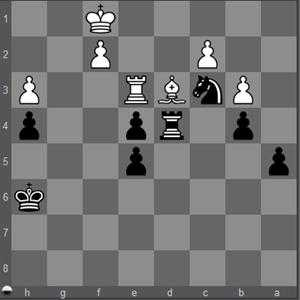

Peão avançado: A ameaça de coroação de um Peão Avançado (Advanced Pawn) é um motivo tático que possibilita o jogador ganhar material diretamente ou então concretizar um ou mais temas táticos, dado que os recursos necessários para prevenir tal coroação ficam indisponíveis para cumprirem outras funções.

1. Bc4 a4
O negro utiliza a ameaça de promoção para distrair o peão "b" branco da defesa do bispo em "c4".
2. bxa4
O peão tem que ser tomado para evitar sua promoção
2... Txc4
e o bispo desprotegido pode ser tomado.